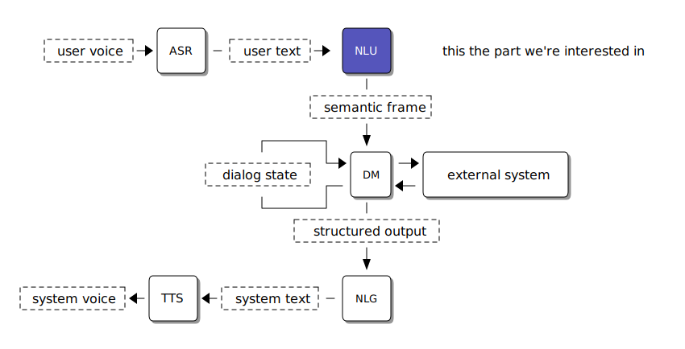
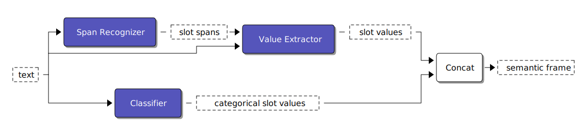

NLU is just slot filling
Intro
This post is a compilation of my ideas about how NLU should look like in a task-oriented dialog system. Any statement without a link is my opinion.
tl;dr
Context
Let's say you're building a dialog system to allow customers of some company to get things done without talking to a real human in a call center. Chances are you're going to use a task-oriented dialog system framework to build your software. Its architecture looks like a tuning fork:

There are many ways to implement components of such system, e.g. a dialog manager can be rule-based, graph-based, or a supervised ML model. The component we'll focus on for the sake of this post is NLU; usually, it's a subsystem bounded by having user utterance text as an input (sometimes with additional dialog context information) and producing a semantic frame, structured representation of a user utterance usable by dialog manager to update the dialog state and drive the further conversation.
Slots and entities
What data exactly and in what shape is contained in a semantic frame differs between the implementations, but it can be generalized to a collection of key-value pairs that I'll call slot fills. An example semantic frame for a first utterance in a flight booking assistant application could look like this:
nlu("yo, tell me what flights to Berlin are available next week") -> [["courtesy", "greeting"], ["intent", "search_flights"], ["flight_destination", "Berlin"], ["flight_window_start", "2020-10-12T00:00:00+02:00"], ["flight_window_end", "2020-10-19T00:00:00+02:00"]]
A slot can be thought of as an atomic information container. A dialog task (AKA dialog strategy, dialog skill) defines the bot's behavior by reacting to slot state changes and requesting slot values from the user in a form of an explicit prompt, or an external system e.g. in a form of HTTP requests.
Slots can be divided into two groups depending on the nature of the data that they accept:
- Non-categorical slots.
You need to parse the underlying text to extract the value in a structured format, so you do care where exactly in the utterance this information occurs.
Usually, it's difficult to enumerate each possible value a non-categorical slot can take.
Non-categorical slots accept time, date, number, phone number, credit card number, etc.
In the above snippet,
flight_destination,flight_window_start, andflight_window_endare examples of this. - Categorical slots.
These are slots that accept a value from a well-defined set of possible cases (think of an enum).
You only care what value occurred, not where it occurred in the utterance.
In the above snippet,
courtesyandintentare examples of this.
Non-categorical slots are similar to entities in the NER problem. The difference is that NER usually concerns universally accepted entities, like person, date, or place. Slots are project-dependent and a single dialog system can contain multiple slots that accept similar, but distinct values, like flight window start and flight window end, or flight departure and flight destination. Another variation is that NER returns merely the location of an entity in the utterance and a slot needs a structured value, not a free-form utterance substring.
While conceptually different, we'll use tools that train NER models to train a token tagger model to recognize project-specific slot locations.
Slot filling model
The overall data pipeline looks like this.

Comments
Comments powered by Disqus